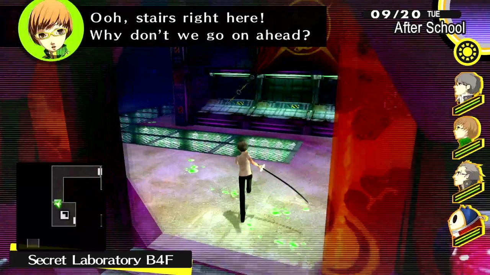

YU
Calm and composed leader of the Investigation Team.

Reach out to the truth.

Persona 4 Golden is set in the small town of Inaba, where a group of students becomes involved in mysterious events connected to a world inside the television.
As they investigate, they face creatures known as Shadows and awaken their inner power called “Persona,” manifestations of their true selves.
The game blends daily school life with supernatural elements, exploring themes such as identity, friendship, and the search for truth.
Calm and composed leader of the Investigation Team.
Loyal friend with a playful personality.

Energetic fighter who values friendship and justice.

Gentle yet strong, with a hidden determined side.

Tough exterior, but kind-hearted inside.

Cheerful idol who supports the team with intelligence.

Mysterious yet cheerful guide of the TV world.

Brilliant detective with sharp reasoning skills.

A strict but caring detective raising Nanako while dealing with his past.

Innocent and kind-hearted girl who brings warmth to Dojima’s life.

A mysterious girl connected to the Velvet Room, searching for her true self.

A seemingly clumsy detective hiding a far deeper and darker truth.

A quiet and misunderstood figure tied to the mysteries of the TV World.

A troubled student whose actions trigger a chain of tragic events.


